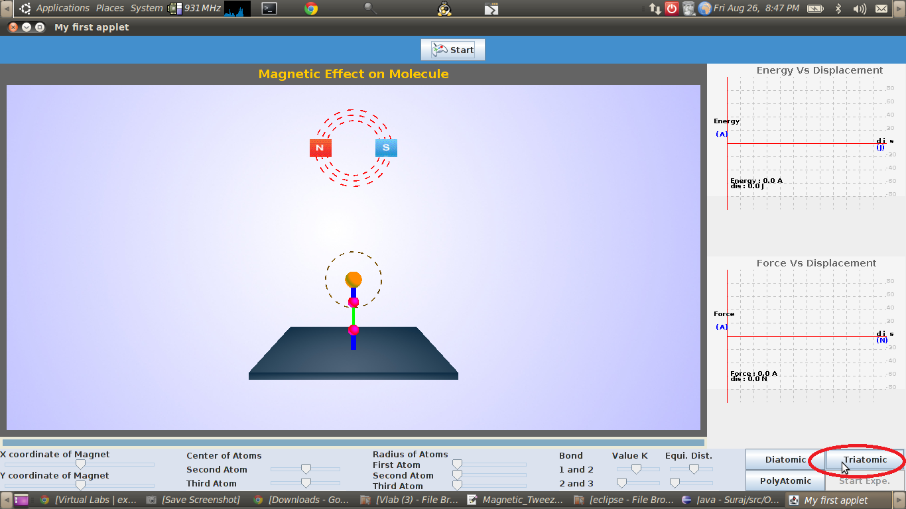

A triatomic molecule has three atoms with two covalent bonds between two pairs of atoms. Examples are carbon dioxide (CO2), ozone (O3) and water (H2O). There are two internuclear distances and a bond angle (refer the following figure) and these three independent variables determine the total energy of a triatomic molecule. Thus, in addition to the bond stretching potential we need to understand the role of bond angle energy in determining molecular stability.

The bond angle energy corresponds to changes in the angle between bonds. As with bond length, the bond angles have an equilibrium value, and any deviation increases the potential energy. The potential energy surface associated with the bond angle can be approximated as a harmonic well using the following function.
U(θ) = Kθ ( θ − θ 0) 2
where Kθ is an empirically determined constant, θ is the current bond angle, and θ0 is the equilibrium angle.
The energy surface ensures that any perturbation to the equilibrium geometry of a triatomic molecule increases the total potential energy of the molecule.
In this experiment, one of the atoms of a triatomic molecule is fixed at a position. The bond lengths and bond angles are varied using using optical forces. The potential energies and corresponding internuclear forces are measured as a function of the end-to-end distance of the molecule.

The potential energy of a triatomic molecule is approximated as follows:
U(x12 , x13 , θ) = 0.5 K (x12 - x012)2 + 0.5 K (x13 - x013)2 + 0.5 Kθ (θ - θ0)2
This energy surface ensures that equilibrium geometry of the triatomic molecule is the configuration with least potential energy. The equilibrium geometry is obtained when θ = θ0, x12 = x012 and x13 = x013.
The internuclear forces can be determined by calculating the negative gradient of U(x12 , x13 , θ) with respect to the atomic coordinates of the atoms that are not fixed and their positions are controlled using the optical tweezer.

To determine the nature of molecular forces acting between the nuclei of triatomic molecules using magnetic tweezer tweezer experiments.


The initial display shows the experimental set up for a default triatomic molecule. To perform this experiment on a molecule of your choice, there are certain parameters to be initialized and the procedure detailed here can be followed.
| STEP 1: Select the tri atomic molecule by clicking on the tab provided. |
|  |
STEP 2: Select a suitable value of the three spring constants (two for bond stretching and one for angle bending) and equilibrium bond length and bond angle using the sliders provided on the display menu,equlibrium length and size of the atoms by using the slider provided on the display menu.
STEP 3: click here to start the experiment.
STEP 4: The magnet position can be varied using the slider provided.

STEP 5: The internuclear force and the potential energy are plotted as a function of the internuclear seperation.


- Essentials of Computational Chemistry by Christopher J.Cramer
- Physical Chemistry by Atkins
- Dynamics of structures by Anil K chopra.
- Molecular Modelling : Principles and Applications by Andrew Leach.
- Optical Tweezers: Measuring Piconewton Forces Mark C. Williams Northeastern University.
- Jurij Kotar “Optical Tweezers” ,University of Cambridge, Cavendish Laboratory, Biological and Soft Systems.
- http://www.stanford.edu/group/blocklab/Optical%20Tweezers%20Introduction.htm http://en.wikipedia.org/wiki/Simple_harmonic_motion
- http://www.physics.uoguelph.ca/tutorials/shm/Q.shm.html
- http://surendranath.tripod.com/Applets/Oscillations/SHM/SHMApplet.html